| Variable | Label | Stats / Values | Freqs (% of Valid) | Valid |
|---|---|---|---|---|
| idAlumno [numeric] |
Mean (sd) : 126741.5 (73035.2) min < med < max: 1 < 126004 < 253129 IQR (CV) : 126460 (0.6) |
205899 distinct values | 205899 (100.0%) |
|
| rbd [numeric] |
Mean (sd) : 11652.9 (9037.7) min < med < max: 1 < 9638 < 42178 IQR (CV) : 12110 (0.8) |
2969 distinct values | 205899 (100.0%) |
|
| genero [factor] |
Género | 1. Masculino 2. Femenino 3. Otro |
\104425 (51.1%) 93198 (45.6%) 6831 ( 3.3%) |
204454 (99.3%) |
| cest_p11_01 [haven_labelled, vctrs_vctr, double] |
Se han burlado de mí o me molestan. | 1. [1] Nunca 2. [2] Pocas veces 3. [3] Algunas veces 4. [4] La mayoría de las vec |
\97930 (48.1%) \63258 (31.1%) \33651 (16.5%) 8604 ( 4.2%) |
203443 (98.8%) |
| cest_p11_02 [haven_labelled, vctrs_vctr, double] |
Me han ignorado, aislado o me han excluido. | 1. [1] Nunca 2. [2] Pocas veces 3. [3] Algunas veces 4. [4] La mayoría de las vec |
\99369 (48.9%) \56133 (27.6%) \33852 (16.7%) \13739 ( 6.8%) |
203093 (98.6%) |
| cest_p11_03 [haven_labelled, vctrs_vctr, double] |
Me han hecho sentir mal en redes sociales o internet (por ejemplo, me han insultado, amenazado, etc.). | 1. [1] Nunca 2. [2] Pocas veces 3. [3] Algunas veces 4. [4] La mayoría de las vec |
\164115 (80.8%) 21380 (10.5%) 11808 ( 5.8%) 5817 ( 2.9%) |
203120 (98.7%) |
| cest_p11_04 [haven_labelled, vctrs_vctr, double] |
Han compartido fotos, videos o información mía por redes sociales o internet sin mi consentimiento. | 1. [1] Nunca 2. [2] Pocas veces 3. [3] Algunas veces 4. [4] La mayoría de las vec |
\166815 (82.1%) 21678 (10.7%) 9841 ( 4.8%) 4777 ( 2.4%) |
203111 (98.6%) |
| cest_p11_05 [haven_labelled, vctrs_vctr, double] |
Me han golpeado. | 1. [1] Nunca 2. [2] Pocas veces 3. [3] Algunas veces 4. [4] La mayoría de las vec |
\176919 (87.1%) 17549 ( 8.6%) 6020 ( 3.0%) 2716 ( 1.3%) |
203204 (98.7%) |
| cest_p11_06 [haven_labelled, vctrs_vctr, double] |
Me han roto o destruido cosas personales a propósito. | 1. [1] Nunca 2. [2] Pocas veces 3. [3] Algunas veces 4. [4] La mayoría de las vec |
\167049 (82.2%) 22315 (11.0%) 9407 ( 4.6%) 4366 ( 2.1%) |
203137 (98.7%) |
| cest_p11_07 [haven_labelled, vctrs_vctr, double] |
Me han amenazado. | 1. [1] Nunca 2. [2] Pocas veces 3. [3] Algunas veces 4. [4] La mayoría de las vec |
\173494 (85.4%) 17101 ( 8.4%) 8161 ( 4.0%) 4364 ( 2.1%) |
203120 (98.7%) |
| cest_p11_08 [haven_labelled, vctrs_vctr, double] |
Me han obligado a realizar cosas que no quiero. | 1. [1] Nunca 2. [2] Pocas veces 3. [3] Algunas veces 4. [4] La mayoría de las vec |
\177702 (87.6%) 16063 ( 7.9%) 6016 ( 3.0%) 3066 ( 1.5%) |
202847 (98.5%) |
| cest_p11_09 [haven_labelled, vctrs_vctr, double] |
Me han robado cosas. | 1. [1] Nunca 2. [2] Pocas veces 3. [3] Algunas veces 4. [4] La mayoría de las vec |
\117080 (57.7%) 44458 (21.9%) 25443 (12.5%) 15757 ( 7.8%) |
202738 (98.5%) |
| cest_p11_10 [haven_labelled, vctrs_vctr, double] |
He dejado de asistir al colegio porque siento miedo de que alguien me haga daño. | 1. [1] Nunca 2. [2] Pocas veces 3. [3] Algunas veces 4. [4] La mayoría de las vec |
\183419 (90.3%) 9602 ( 4.7%) 5756 ( 2.8%) 4387 ( 2.2%) |
203164 (98.7%) |
| cest_p12_01 [haven_labelled, vctrs_vctr, double] |
Insultan, ofenden o ridiculizan a otro(a) estudiante con mensajes o comentarios. | 1. [1] Nunca 2. [2] Pocas veces 3. [3] Algunas veces 4. [4] La mayoría de las vec |
\83989 (41.4%) \58610 (28.9%) \41684 (20.5%) \18748 ( 9.2%) |
203031 (98.6%) |
| cest_p12_02 [haven_labelled, vctrs_vctr, double] |
Amenazan o chantajean a otro(a) estudiante con mensajes o comentarios. | 1. [1] Nunca 2. [2] Pocas veces 3. [3] Algunas veces 4. [4] La mayoría de las vec |
\126722 (62.5%) 40525 (20.0%) 24288 (12.0%) 11256 ( 5.6%) |
202791 (98.5%) |
| cest_p12_03 [haven_labelled, vctrs_vctr, double] |
Envían contenidos sexuales, tales como imágenes, comentarios o mensajes, para molestar a otro(a) estudiante. | 1. [1] Nunca 2. [2] Pocas veces 3. [3] Algunas veces 4. [4] La mayoría de las vec |
\151152 (74.6%) 29155 (14.4%) 14780 ( 7.3%) 7476 ( 3.7%) |
202563 (98.4%) |
| cest_p12_04 [haven_labelled, vctrs_vctr, double] |
Se comparten mentiras sobre otro(a) estudiante para perjudicarlo(a) o molestarlo(a). | 1. [1] Nunca 2. [2] Pocas veces 3. [3] Algunas veces 4. [4] La mayoría de las vec |
\91733 (45.3%) \51476 (25.4%) \34814 (17.2%) \24556 (12.1%) |
202579 (98.4%) |
| cest_p12_05 [haven_labelled, vctrs_vctr, double] |
Comparten secretos o cosas íntimas de alguien sin su consentimiento. | 1. [1] Nunca 2. [2] Pocas veces 3. [3] Algunas veces 4. [4] La mayoría de las vec |
\109758 (54.2%) 45082 (22.3%) 28480 (14.1%) 19043 ( 9.4%) |
202363 (98.3%) |
| cest_p12_06 [haven_labelled, vctrs_vctr, double] |
Se hacen pasar por otro(a) estudiante para decir o hacer cosas pesadas o perjudiciales. | 1. [1] Nunca 2. [2] Pocas veces 3. [3] Algunas veces 4. [4] La mayoría de las vec |
\143467 (70.8%) 31455 (15.5%) 16135 ( 8.0%) 11520 ( 5.7%) |
202577 (98.4%) |
Primera Exploración SIMCE y Cyberbullying
En el presente documento se presenta un primer análisis exploratorio de los datos SIMCE 2023, con tal de obtener información acerca de cómo están relacionadas las distintas variables en torno a ciberbullyng y violencia en las escuelas en Chile en los segundos medios. En primer lugar se hizo una revisión del comportamiento de los ítems de dos baterías, una dedicada a acoso escolar y la otra a ser testigo de acoso en redes sociales. Luego, se diseñaron variables compuestas para determinar si los estudiantes son víctimas recurrentes de cyberacoso y violencia offline, y si son testigos recurrente de violencia en redes sociales entre sus compañeros. Estas tres variables fueron exploradas en profundidad.
Método
Muestra
Se ocuparon los datos de SIMCE 2023, específicamente la muestra de estudiantes de segundo medio. En total son 205899 estudiantes, que están anidados en 2969 escuelas. Los datos fueron recogidos a través de una encuesta que se realiza posterior al examen estandarizado de lenguaje y matemáticas.
Variables
Se trabajó con las siguientes variables:
Nivel estudiante
genero: La variable original tenía 5 alternativas, cuales son masculino, femenino, Otro, No sé, Prefiero no decirlo. La variable fue reagrupada en Masculino (1), Femenino (2), Otro (3). Otro contiene al resto de categorías que no son ni masculinas ni femeninas.
Batería cest_p11: Durante este año, ¿cuántas veces te ha ocurrido lo siguiente con tus compañeros y compañeras?
- Se han burlado de mí o me molestan.
- Me han ignorado, aislado o me han excluido.
- Me han hecho sentir mal por redes sociales o internet (por ejemplo, me han insultado, amenazado, etc.).
- Han compartido fotos, videos o información mía por redes sociales o internet sin mi consentimiento.
- Me han golpeado.
- Me han roto o destruido cosas personales a propósito.
- Me han amenazado.
- Me han obligado a realizar cosas que no quiero.
- Me han robado cosas.
- He dejado de asistir al colegio porque siento miedo de que alguien me haga daño.
Categorías de respuesta: Nunca (1), Pocas veces (2), Algunas veces (3), La mayoría de las veces (4)
Batería cest_p12: En el último año, ¿has observado o sido testigo en tu curso de alguna de las siguientes situaciones ocurridas en redes sociales (tales como WhatsApp, Instagram, Facebook) o algún otro sitio en internet?
- Insultan, ofenden o ridiculizan a otro(a) estudiante con mensajes o comentarios.
- Amenazan o chantajean a otro(a) estudiante con mensajes o comentarios.
- Envían contenidos sexuales, tales como imágenes, comentarios o mensajes, para molestar a otro(a) estudiante.
- Se comparten mentiras sobre otro(a) estudiante para perjudicarlo(a) o molestarlo(a).
- Comparten secretos o cosas íntimas de alguien sin su consentimiento.
- Se hacen pasar por otro(a) estudiante para decir o hacer cosas pesadas o perjudiciales.
Categorías de respuesta: Nunca (1), Pocas veces (2), Algunas veces (3), La mayoría de las veces (4)
Víctima de violencia fuera de línea: Variable dicotómica (1/0) que indica si el estudiante eligió Algunas veces (3) o La mayoría de las veces (4) en uno o varios de los ítems 1, 2, 5, 6, 7, 8 y 10 de la batería cest_p11.
Víctima de violencia en línea: Variable dicotómica (1/0) que indica si el estudiante eligió Algunas veces (3) o La mayoría de las veces (4) en uno o varios de los ítems 3 y 4 de la batería cest_p11.
Testigo u observador de violencia en redes sociales: Variable dicotómica (1/0) que indica si el estudiante eligió Algunas veces (3) o La mayoría de las veces (4) en uno o varios de los ítems de la batería cest_p12.
Nivel escuela
Tipo de financiamiento de la escuela: La base original distingue entre colegio Municipal, Particular Subvencionado, Particular Pagado, Corp. De Administración Delegada (DL 3166) y Servicio Local de Educación. Las últimas dos categorías junto a la primera fueron agrupadas como colegios públicos, quedando los valores en Público (1), Particular Subvencionado (2) y Particular pagado (3).
Nivel de adopción digital de la escuela: Media agregada por escuela de la siguiente lista de items
- En el colegio nos motivan a utilizar herramientas tecnológicas.
- Ocupamos la tecnología frecuentemente en el colegio para aprender.
- Para mis compañeros(as) es importante saber usar los computadores para aprender.
- Los profesores y profesoras nos enseñan a utilizar herramientas tecnológicas.
- En el colegio se preocupan de tener los computadores en buen estado.
- El colegio cuenta con internet de buena calidad.
Los valores varían de 1 a 4. A mayor el puntaje, mayor el nivel de adopación.
Proporción de estudiantes víctimas de violencia fuera de línea en la escuela: Cantidad de estudiantes que cumplen condición 1 dividido por el total de estudiantes de la escuela.
Proporción de estudiantes víctimas de violencia en línea en la escuela: Cantidad de estudiantes que cumplen condición 1 dividido por el total de estudiantes de la escuela.
Proporción de estudiantes testigos de violencia en redes sociales en la escuela: Cantidad de estudiantes que cumplen condición 1 dividido por el total de estudiantes de la escuela.
Técnicas de análisis
Se realizó una exploración descriptiva mediante gráficos univariados y bivariados. También se reviso el nivel asociación entre ítems y la validez de las baterías.
Exploración de los ítems
Descriptivos
En las siguientes tablas se muestran las distribuciones de los ítems, así como sus principales estadísticos. A rasgos generales, se puede señalar que los niveles de violencia que sufren los individuos no es recurrente en la mayoría de la muestra.
Los ítemms que componen la batería de victimización de acoso escolar tiende a rondar entre el 80% y 90% de individuos que responden que nunca o casi nunca son partícipes de los actos descritos. Los promedios de estas variables también so bajos, tienden a estar entre 1 y 2 en una escala de 1 a 4. Los ítems que señalan insultos, burlas o robos se sale de la norma, en cuanto promedian evidentemente más alto que el resto (>1.7) y tienen una mayor cantidad de participantes en las alternativas “Algunas veces” y “La mayoría de las veces”.
Para ser más precisos con la comparación, se diseñón un gráfico de puntos señalando el promedio de cada ítem. Se nota que lo que más sufren los participantes son insultos, burlas y robos, por sobre golpes, amenazas o abusos. Sin embargo, detrás de estos tres ítemes, los que tienen que ver con ser víctima de violencia en redes sociales alcanzan las medias más altas en la batería.
Respecto a los ítems que señalan ser testigo de violencia en RR.SS. se observa una distribución que se concentra en valores mayores pero es más dispersa. Las medias entre ítemes están más separadas entre sí, sin patrones claros. A simples rasgos, el testimonio de violencia digital tiene más variabilidad que el haber sido víctima de ella.
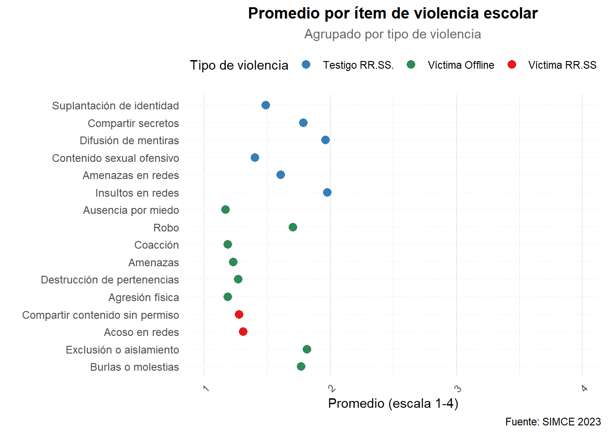
Una vez que se secciona el promedio por género, se encuentra que aquellos que declaran Otro (Incluye “No sé”, “Prefiero no decirlo” y “Otro”) género al masculino o femenino presentan niveles mucho más elevados en victimización, alrededor de todos los ítems. Respecto a la comparación entre hombres y mujeres, los hombres tienden a puntuar sobre sus pares en eventos de violencia directa o explícita como amenazas, golpes o burlas, sin embargo, las mujeres sufren más de situaciones implosivas o menos visibles de violencia, como la aislación, el acoso por redes y el no ir al colegio por miedo.
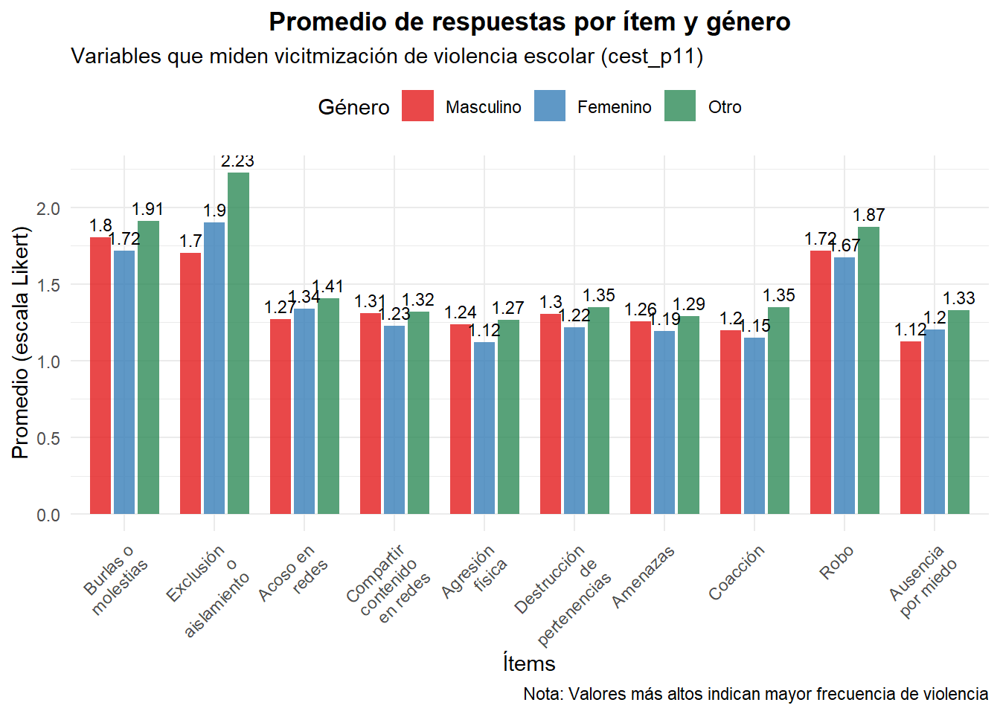
A la hora de reconocer o ser testigos de violencia en redes sociales, las brechas de quienes declaran “otro” género al masculino y femenino disminuyen, pero siguen siendo quienes presentan cifras más altas. A su vez, las mujeres presentan notorias ventajas sobre los hombres para reconocer el ciberacoso en redes. Aunque llama la atención de que hombres y mujeres se igualan al indicar el nivel de contenido sexual explícito que se reparten entre compañeros. Es contraintuitivo a lo pensado.
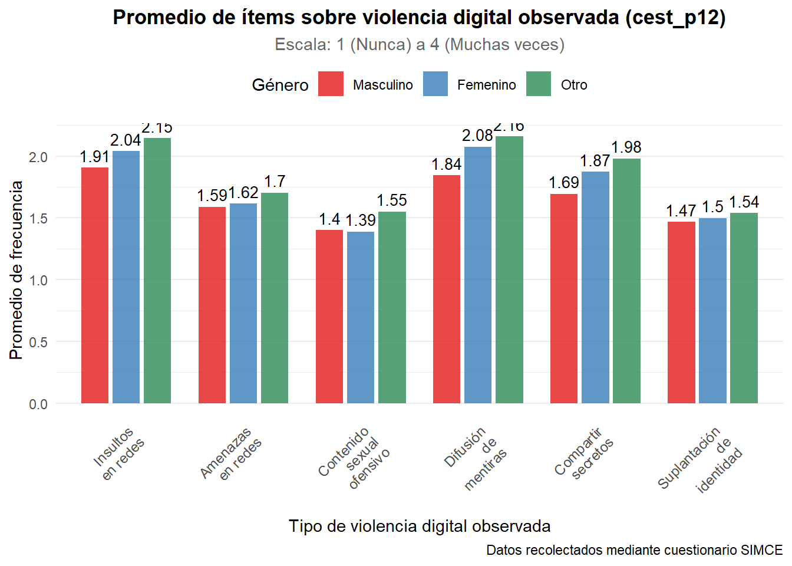
Correlaciones
Los ítems están positiva y fuertemente asociados entre sí, todos los coeficientes superan el >.20, y la mayoría está por sobre el >.30. La matriz muestra claramente cómo se marcan los cuadrantes de cada batería, dando indicios de que existe consistencia interna entre cada una de ellas. A su vez, el tamaño de efecto entre los ítems de ser testigo/observar ciberacoso son más fuertes que los que existen entre los ítemes de victimización.
En la batería de victimización llama la atención que los ítems de ciberacoso (3 y 4) sean los que tengan un tamaño de efecto mayor (.55) entre todas las demás. Las primeras dos preguntas, que refieren a insultos y burlas también presentan alta correlación (.54). Y amenazas con acoso en RR.SS también sobrepasan los >.50.
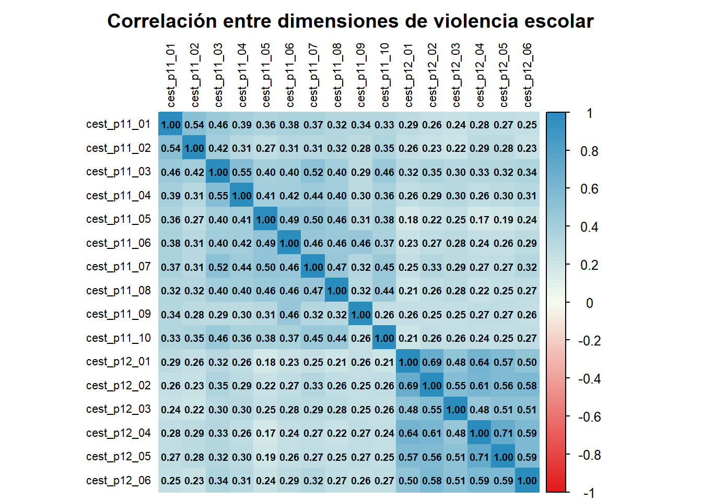
Consistencia interna de las variables
Debido a estas altas correlaciones vale la pena preguntarse si acaso la batería cest_p11 está midiendo más de una dimensión de violencia. Se corrió un análisis factorial para explorar la situación. Si se le especifican tres dimensiones, el modelo sugiere que los ítems de redes sociales se asocian a amenazas y dejar de asistir a la escuela, aunque la carga factorial que más pesa es la de insultos y amenazas en redes. Por otro lado, el modelo agrupa todas las situaciones de abuso directo juntas, y deja aislados las burlas e insultos.
De todas formas, los alpha de cronbach no resultan ser suficientes en el factor 2 y 3.
| Factor 1 | Factor 2 | Factor 3 | |
| Se han burlado de mí o me molestan. | 0.07 | 0.10 | 0.65 |
| Me han ignorado, aislado o me han excluido. |
0.08 | -0.00 | 0.67 |
| Me han hecho sentir mal en redes sociales o internet (por ejemplo, me han insultado, amenazado, etc.). |
0.83 | -0.20 | 0.17 |
| Han compartido fotos, videos o información mía por redes sociales o internet sin mi consentimiento. |
0.58 | 0.07 | 0.05 |
| Me han golpeado. | 0.26 | 0.50 | -0.07 |
| Me han roto o destruido cosas personales a propósito. |
0.01 | 0.74 | 0.00 |
| Me han amenazado. | 0.54 | 0.29 | -0.09 |
| Me han obligado a realizar cosas que no quiero. |
0.30 | 0.43 | -0.04 |
| Me han robado cosas. | -0.14 | 0.57 | 0.16 |
| He dejado de asistir al colegio porque siento miedo de que alguien me haga daño. |
0.47 | 0.14 | 0.05 |
| Cronbach's α | 0.78 | 0.70 | 0.70 |
Para verificar si en realidad las baterías revelan una variable unidimensional, se revisa el nivel de consistencia interna que tiene, así como el aporte particular de cada item. Los resultados revelan que tanto la batería de victimización como la de observar ciberacoso funcionan bien (α>.80).
| Row | Missings | Mean | SD | Skew | Item Difficulty | Item Discrimination | α if deleted | |
| Se han burlado de mí o me molestan. | 1.19 % | 1.77 | 0.87 | 0.85 | 0.44 | 0.59 | 0.83 | |
| Me han ignorado, aislado o me han excluido. | 1.36 % | 1.81 | 0.94 | 0.86 | 0.45 | 0.52 | 0.84 | |
| Me han hecho sentir mal en redes sociales o internet (por ejemplo, me han insultado, amenazado, etc.). | 1.35 % | 1.31 | 0.71 | 2.4 | 0.33 | 0.64 | 0.83 | |
| Han compartido fotos, videos o información mía por redes sociales o internet sin mi consentimiento. | 1.35 % | 1.27 | 0.66 | 2.59 | 0.32 | 0.58 | 0.83 | |
| Me han golpeado. | 1.31 % | 1.19 | 0.54 | 3.29 | 0.30 | 0.57 | 0.84 | |
| Me han roto o destruido cosas personales a propósito. | 1.34 % | 1.27 | 0.65 | 2.62 | 0.32 | 0.61 | 0.83 | |
| Me han amenazado. | 1.35 % | 1.23 | 0.62 | 2.96 | 0.31 | 0.61 | 0.83 | |
| Me han obligado a realizar cosas que no quiero. | 1.48 % | 1.18 | 0.55 | 3.36 | 0.30 | 0.57 | 0.83 | |
| Me han robado cosas. | 1.54 % | 1.7 | 0.96 | 1.14 | 0.43 | 0.46 | 0.85 | |
| He dejado de asistir al colegio porque siento miedo de que alguien me haga daño. | 1.33 % | 1.17 | 0.57 | 3.68 | 0.29 | 0.54 | 0.84 | |
| Mean inter-item-correlation=0.387 · Cronbach's α=0.849 | ||||||||
| Row | Missings | Mean | SD | Skew | Item Difficulty | Item Discrimination | α if deleted | |
| Insultan, ofenden o ridiculizan a otro(a) estudiante con mensajes o comentarios. | 1.39 % | 1.98 | 0.99 | 0.61 | 0.49 | 0.71 | 0.87 | |
| Amenazan o chantajean a otro(a) estudiante con mensajes o comentarios. | 1.51 % | 1.61 | 0.9 | 1.31 | 0.40 | 0.74 | 0.86 | |
| Envían contenidos sexuales, tales como imágenes, comentarios o mensajes, para molestar a otro(a) estudiante. | 1.62 % | 1.4 | 0.78 | 1.96 | 0.35 | 0.61 | 0.88 | |
| Se comparten mentiras sobre otro(a) estudiante para perjudicarlo(a) o molestarlo(a). | 1.61 % | 1.96 | 1.05 | 0.7 | 0.49 | 0.76 | 0.86 | |
| Comparten secretos o cosas íntimas de alguien sin su consentimiento. | 1.72 % | 1.79 | 1.01 | 0.99 | 0.45 | 0.73 | 0.86 | |
| Se hacen pasar por otro(a) estudiante para decir o hacer cosas pesadas o perjudiciales. | 1.61 % | 1.49 | 0.87 | 1.73 | 0.37 | 0.68 | 0.87 | |
| Mean inter-item-correlation=0.572 · Cronbach's α=0.889 | ||||||||
Sin embargo, ya fue demostrado que el robo demuestra un comportamiento distinto que el resto de ítems, y para fines del estudio se espara trabajar violencia digital y violencia offline de modo diferenciado. Entonces se prueba si la batería de victimización sigue funcionando si se restan el ítem 3, 4 y 9. El alpha se sostiene >.80, por lo que se decide seguir trabajando así.
| Row | Missings | Mean | SD | Skew | Item Difficulty | Item Discrimination | α if deleted | |
| Se han burlado de mí o me molestan. | 1.19 % | 1.77 | 0.87 | 0.85 | 0.44 | 0.57 | 0.78 | |
| Me han ignorado, aislado o me han excluido. | 1.36 % | 1.81 | 0.94 | 0.86 | 0.45 | 0.51 | 0.79 | |
| Me han golpeado. | 1.31 % | 1.19 | 0.54 | 3.29 | 0.30 | 0.56 | 0.78 | |
| Me han roto o destruido cosas personales a propósito. | 1.34 % | 1.27 | 0.65 | 2.62 | 0.32 | 0.56 | 0.77 | |
| Me han amenazado. | 1.35 % | 1.23 | 0.62 | 2.96 | 0.31 | 0.58 | 0.77 | |
| Me han obligado a realizar cosas que no quiero. | 1.48 % | 1.18 | 0.55 | 3.36 | 0.30 | 0.56 | 0.78 | |
| He dejado de asistir al colegio porque siento miedo de que alguien me haga daño. | 1.33 % | 1.17 | 0.57 | 3.68 | 0.29 | 0.54 | 0.78 | |
| Mean inter-item-correlation=0.396 · Cronbach's α=0.803 | ||||||||
PD. Como reflexión personal, pareciera que hay suficiente variabilidad y riqueza conceptual entre los ítems para pensar en trabajarlos por separado ¿Por qué queremos agruparlos? Trabajarlos por separados nos permitiría profundizar más en el análisis, aunque también lo hará más complejo. Discutamoslo.
Exploración de índices
Descriptivos Nivel estudiantes
El siguiente gráfico muestra el porcentaje de estudiantes con respecto al total de la muestra que declara ser víctima o testigo recurrente de violencia. Un 45% de estudiantes que declaran observar violencia en redes sociales. A su vez, un 36% de sus estudiantes que declaran violencia offline. Las cifras bajan si se trata de violencia offline, donde sólo un 13% declaran ser víctimas.
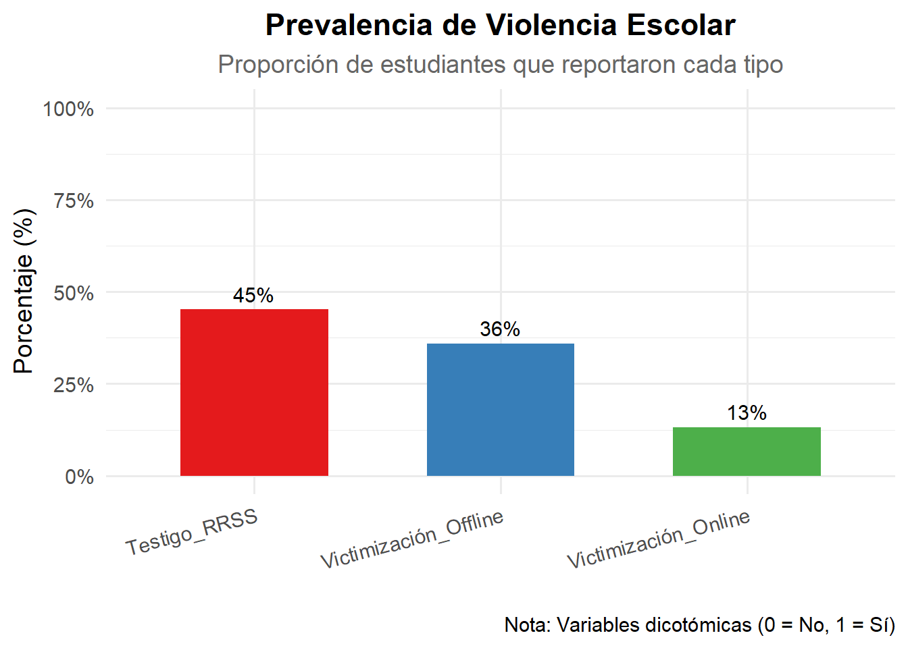
En los gráficos que siguen se expone la proporción de estudiantes que declaran violencia con respecto al total de estudiantes de su mismo género. Los resultados se leen como “Del 100% de hombres, en promedio un 41% de ellos declara ser víctima de violencia offline”.
Los resultados muestran que las estudiantes mujeres y de género “Otro” tienden a presentar mayores níveles de testificación de violencia digital y de victimización de violencia offline. Sin embargo, las cifras disminuyen y casi se igualan en victimización de violencia digital.
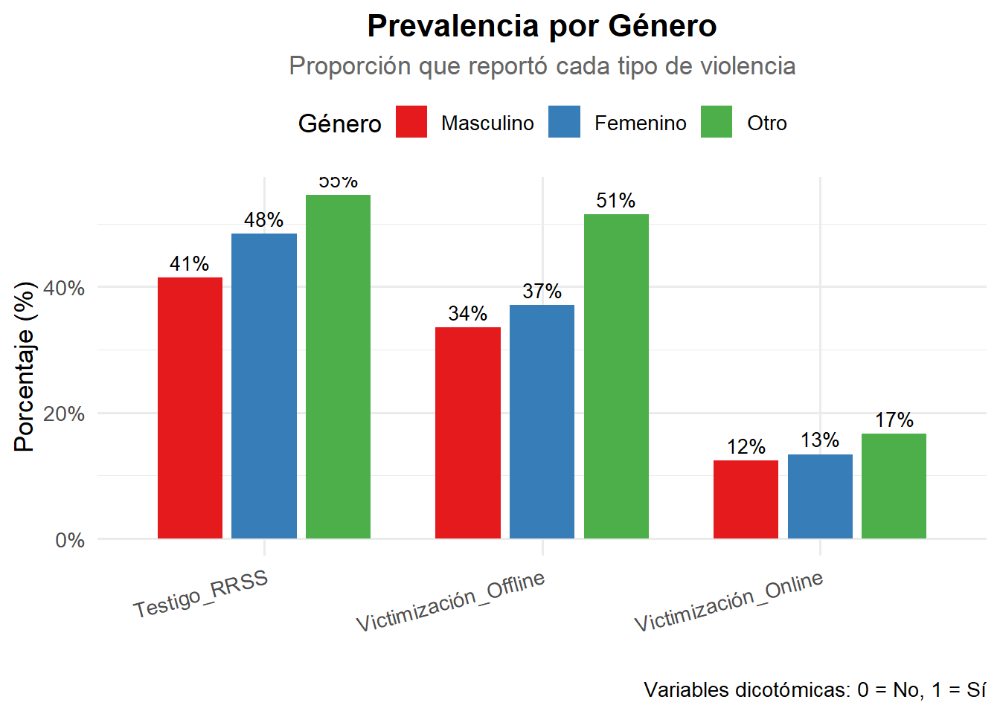
El gráfico a continuación permite elaborar un mapa de cómo están cruzados los tipos de violencia en las escuelas, señalando la proporción de estudiantes que comparten ambos tipos de violencia. Los resultados muestran que un 12% del 13% que declara violencia online, también declara violencia offline. Es decir, hay un 2% que sólo es víctima de acoso en redes.
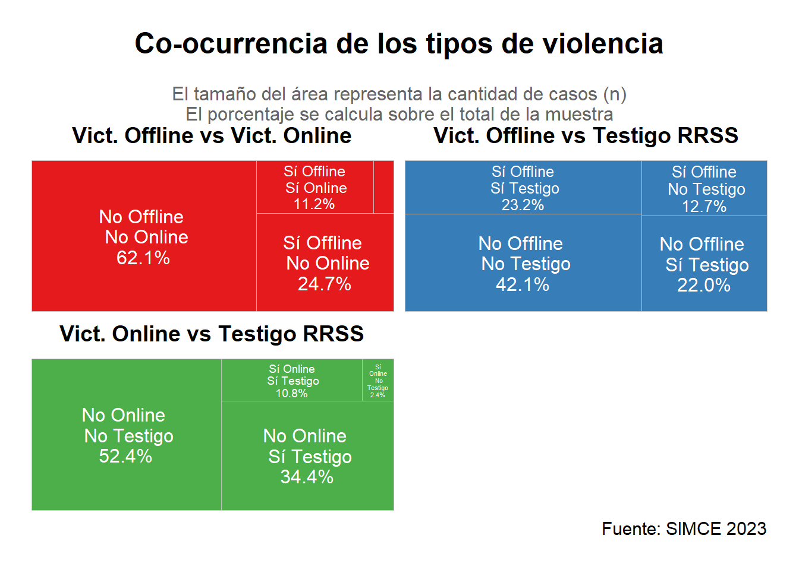
Correlaciones nivel estudiantes
Si se revisan las correlaciones entre los índices, resulta que la victimización online y offline tienen una asociación positiva y considerablemente alta (>.40), y que el testimonio de ciberacoso tiene una asociación mediana con los índices de victimización (.29).
La correlación con el índice de NUDOS sugiere que casi no existe relación entre ser víctima de violencia y la percepción de adopción digital en la escuela (<.6). Sin embargo, se observa una correlación negativa y tenue con ser testigo de violencia en redes sociales (<.11). Es interesante, pues esto se lee: “A medida que el estudiante percibe que su escuela adopta menos las tecnologías digitales para su uso en los procesos de aprendizaje, mayor es la violencia que observan en las redes sociales entre sus compañeros”.
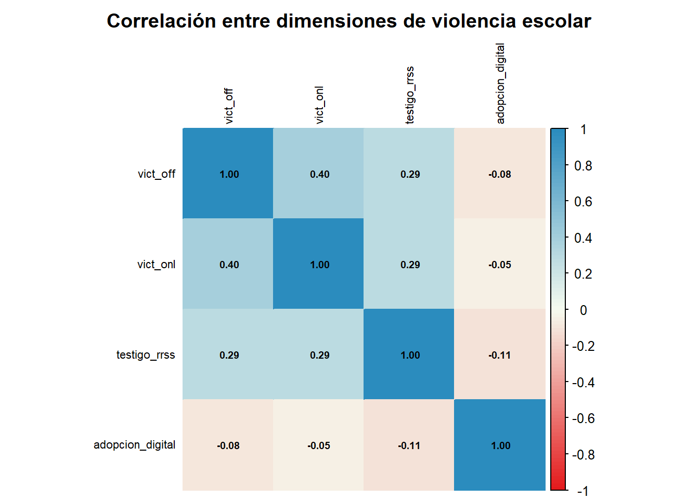
Descriptivos Nivel escuela
Los siguientes gráficos pertenecen al nivel de escuela, osea que se utilizó una base de datos con 2991 casos, donde cada fila es la proporción de estudiantes que cumplen la condición de las variables en la escuela, con respecto al total de estudiantes.
Las escuelas varían respecto a la proporción de sus estudiantes que son víctimas o testigos de violencia. Como muestra el presente gráfico de cajas, hay escuelas que están cerca del 100%, y otras cerca del 0%, concentrándose la mayoría en valores intermedios.
Para el caso de Testigo y victimización offline, al menos el 50% de las escuelas tienen una proporción de entre 30% y 60% de estudiantes que cumplen la condición. Respecto a victimización online, las escuelas se concentran entre 0% y 20%, teniendo una distribución menos variable.
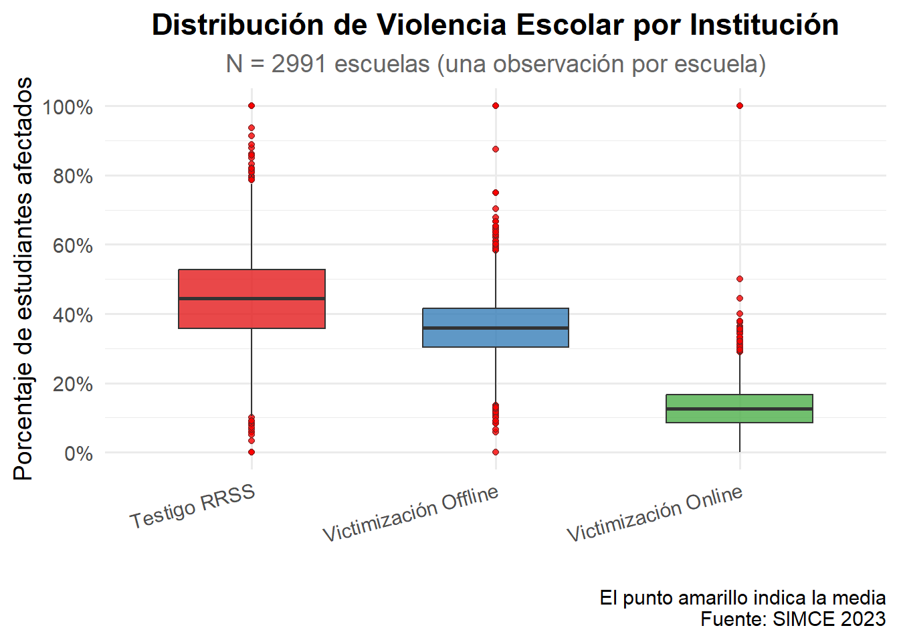
Se diseñó el mismo gráfico de barras separando por el tipo de financiamiento de escuelas en cada una de las variables de interés. Se muestra que los colegios particulares pagados tienden a presentar niveles menores de violencia que los subvencionados y públicos.
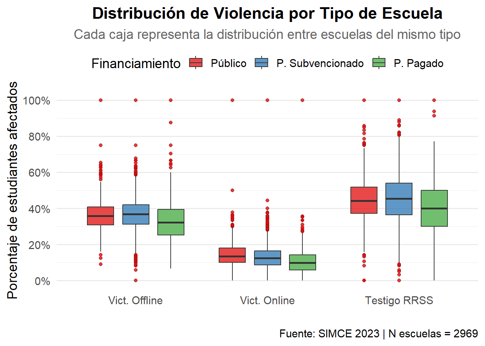
Si se revisan los estadísticos por cada una de las variables en los tres tipos de escuelas se confirma el patrón: Los particulares presentan medias menores que el resto. Sin embargo, también demuestran tener una desviación estandar mayor, osea que las escuelas particulares son más distintas entre sí que las públicas y subvencionadas en lo que respecta a la violencia.
| violence_type | rbd_financiamiento | mean | sd |
|---|---|---|---|
| Vict. Offline | Público | 0.3618148 | 0.0846072 |
| Vict. Offline | P. Subvencionado | 0.3684109 | 0.0903377 |
| Vict. Offline | P. Pagado | 0.3321682 | 0.1156752 |
| Vict. Online | Público | 0.1436622 | 0.0713184 |
| Vict. Online | P. Subvencionado | 0.1305842 | 0.0665477 |
| Vict. Online | P. Pagado | 0.1062380 | 0.0789403 |
| Testigo RRSS | Público | 0.4425319 | 0.1188505 |
| Testigo RRSS | P. Subvencionado | 0.4504685 | 0.1312080 |
| Testigo RRSS | P. Pagado | 0.4026564 | 0.1509718 |
Correlaciones nivel escuela
El siguiente gráfico muestra la correlación que tienen las tres variables principales a nivel de escuela. Los resultados dicen que los niveles de violencia se refuerzan positivamente entre sí. Las escuelas que tienen mayor victimización offline, a su vez tienen una mayor proporción de estudiantes que reportan victimización online. Lo mismo para las relaciones con ser testigo en RR.SS.
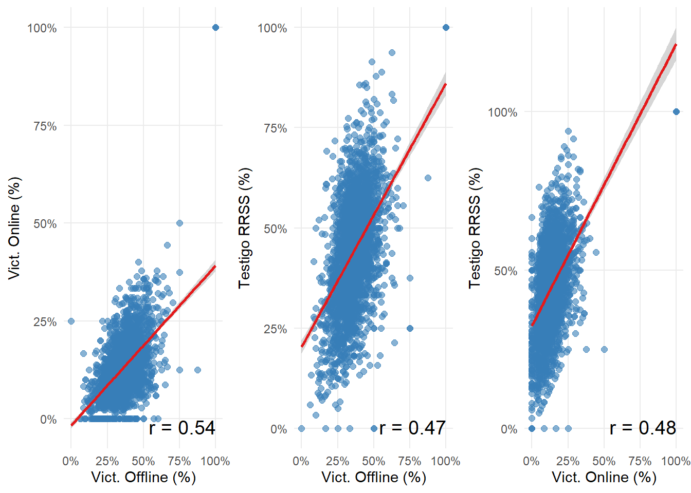
Si estas correlaciones se separan por tipo de escuela se hallan algunas cosas interesantes. Aunque el reforzamiento entre la victimización online y offline no cambia mucho, la correlación entre los dos tipos de victimización con ser testigo de la violencia en redes sociales es notoriamente más fuerte en colegios particulares. Esto quiere decir, que en las escuelas particulares a medida que hay más estudiantes que reconocen más situaciones de ciberacoso en redes entre sus compañeros, tienden a reportar mayores niveles de violencia física y online que los estudiantes de colegios públicos.
De hecho, si se observa en detalle el gráfico, aunque la pendiente de colegios particulares sea menor, osea que los valores partan desde valores más inferiores, en los valores más altos la pendiente supera a la de colegios públicos y subvencionados. Esto quiere decir, que en las escuelas que tienen mayores niveles de violencia, los particulares, públicos y subvencionados tienden a parecerse más. Las diferencia de medias se explican sobre todo por los casos que tienen niveles menores de violencia.
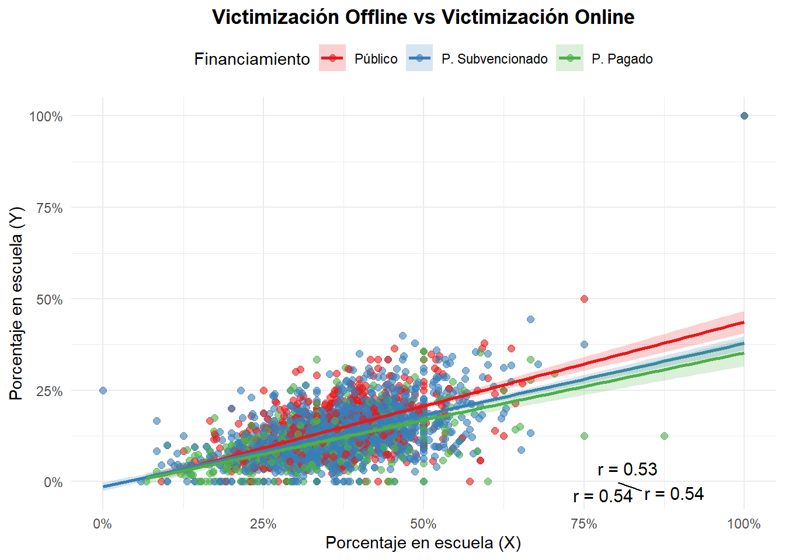
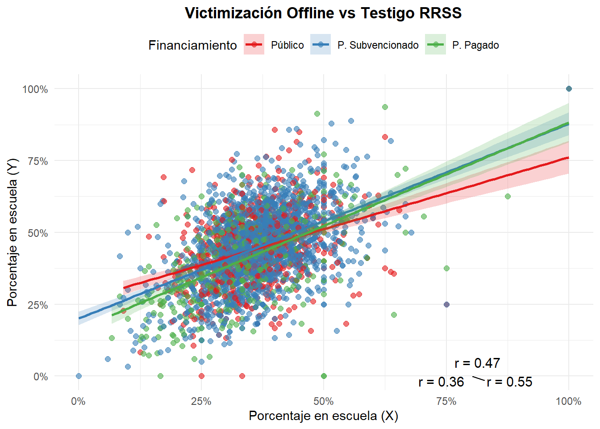
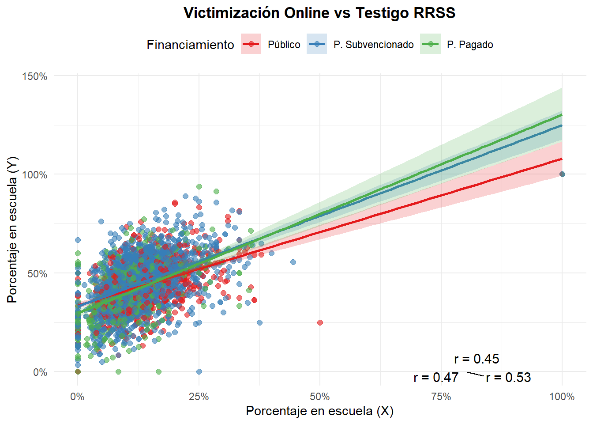
El análisis termina con una revisión separada de la correlación entre adopción digital y las tres variables. Los gráficos explicitan la baja asociación que hay entre las variables.
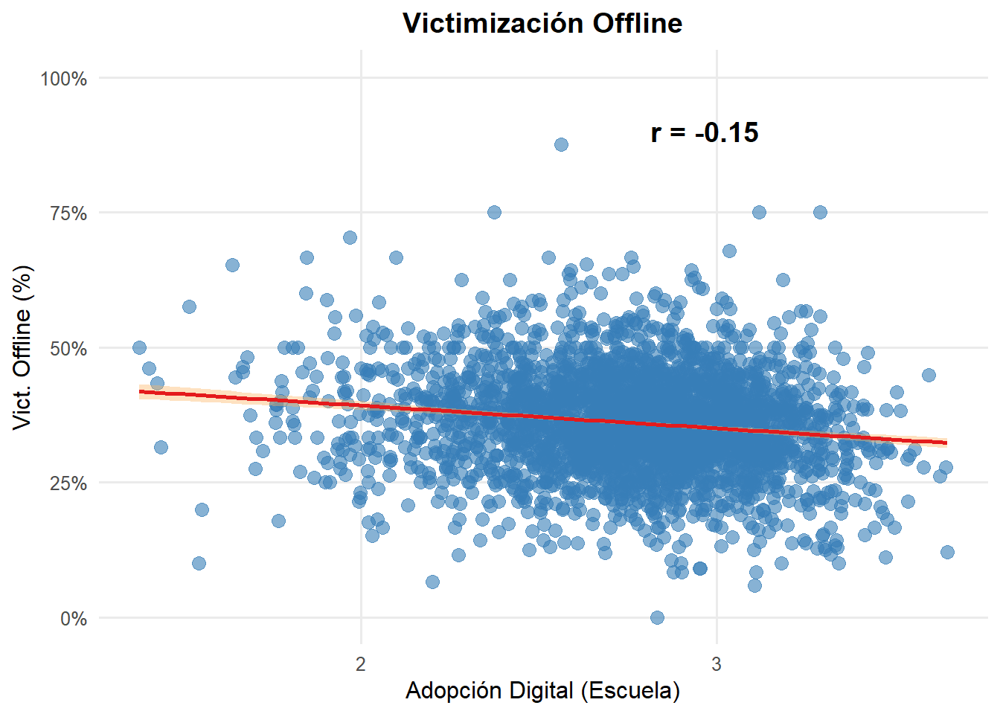
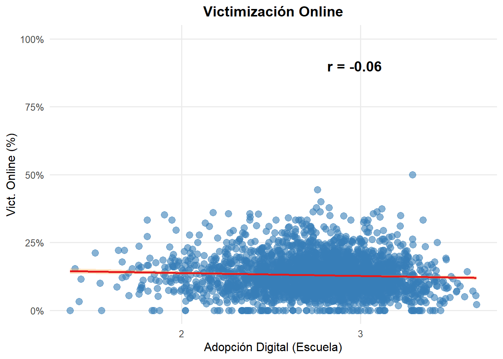
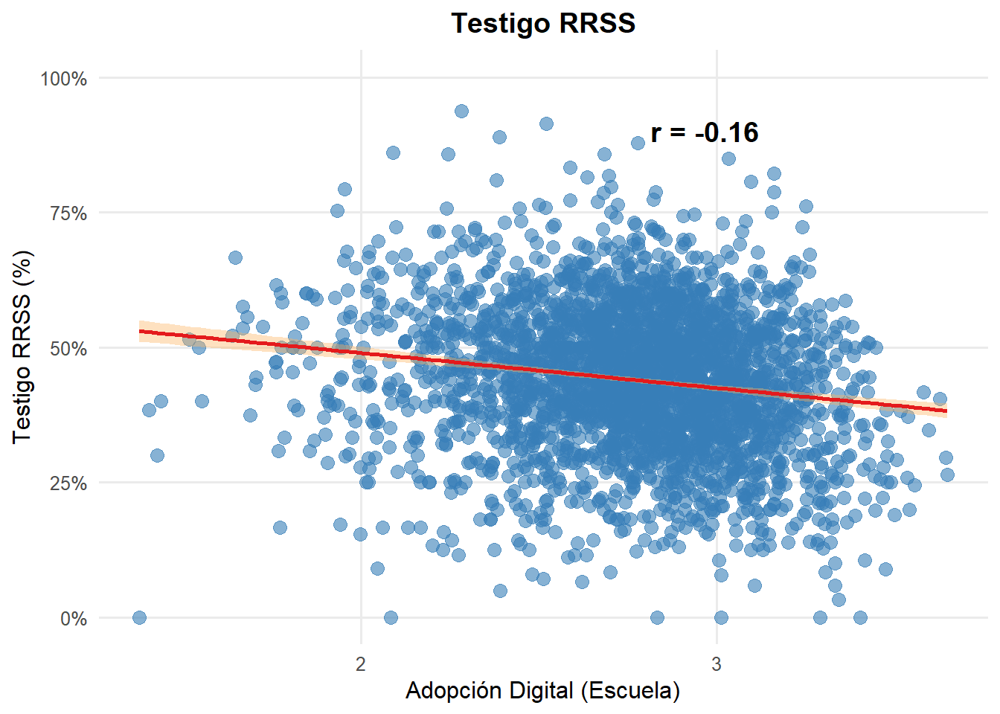